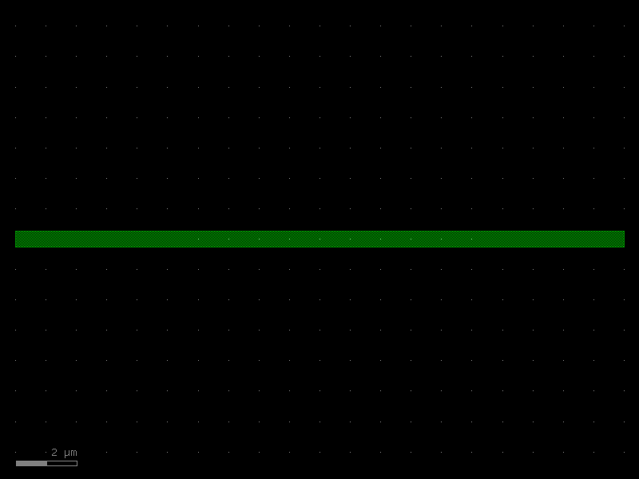
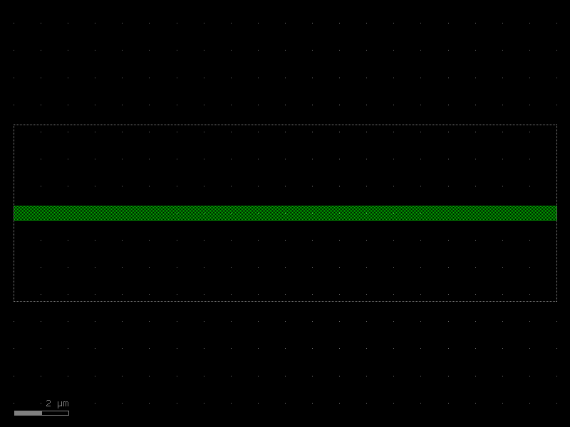
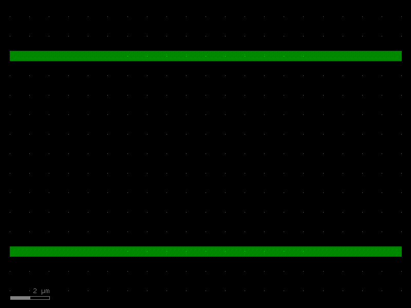
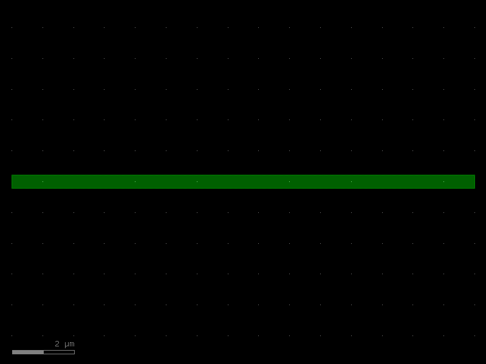
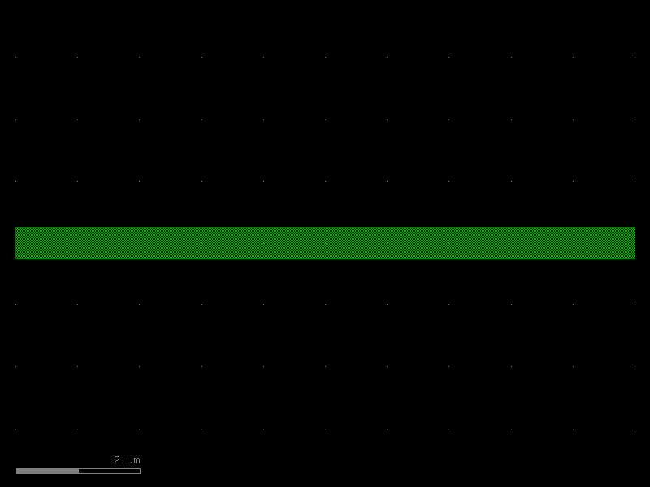

PCells
A PCell (short for parameterized
cell) is a reusable cell whose geometry is generated by a Python function.
In kfactory, any function decorated with @kf.cell becomes a PCell.
Key benefits:
- Automatic caching — calling the same function with the same arguments returns the identical cell object (no duplicate shapes or redundant computation).
- Auto-naming — the cell name encodes its parameters (e.g.
wg_straight_W0p5_L10), so GDS exports are always unambiguous. - Settings dict — each cached cell records its construction parameters in
cell.settings, enabling round-tripping and LVS annotation.
API quick-reference
| Decorator | Cell type returned | Unit hint |
|---|---|---|
@kf.cell |
KCell (DBU integers) |
DBU |
@kf.cell(output_type=kf.DKCell) |
DKCell (µm floats) |
µm |
@kf.vcell |
VKCell (virtual; geometry is materialised in the layout only when the cell is inserted into a KCell) |
any |
@pdk.cell |
KCell bound to a specific KCLayout |
DBU |
Setup
import kfactory as kf
class LAYER(kf.LayerInfos):
WG: kf.kdb.LayerInfo = kf.kdb.LayerInfo(1, 0)
WGCLAD: kf.kdb.LayerInfo = kf.kdb.LayerInfo(2, 0)
L = LAYER()
kf.kcl.infos = L
1 · Basic PCell — DBU API
Decorate a function that creates a KCell with @kf.cell. All arguments must
be hashable (integers, floats, strings, LayerInfo) so the cache key can be
computed.
@kf.cell
def wg_straight(width: int, length: int) -> kf.KCell:
"""Straight waveguide (DBU coordinates).
Args:
width: Waveguide core width in DBU.
length: Waveguide length in DBU.
"""
c = kf.KCell()
layer = kf.kcl.find_layer(L.WG)
c.shapes(layer).insert(kf.kdb.Box(0, -width // 2, length, width // 2))
c.add_port(
port=kf.Port(
name="o1",
trans=kf.kdb.Trans(2, False, 0, 0),
width=width,
layer_info=L.WG,
)
)
c.add_port(
port=kf.Port(
name="o2",
trans=kf.kdb.Trans(0, False, length, 0),
width=width,
layer_info=L.WG,
)
)
return c
# Construct with DBU arguments (1 nm = 1 DBU at default dbu=0.001 µm/DBU)
WG_WIDTH = kf.kcl.to_dbu(0.5) # 500 DBU (0.5 µm)
WG_LEN = kf.kcl.to_dbu(20.0) # 20000 DBU (20 µm)
s = wg_straight(WG_WIDTH, WG_LEN)
s

Automatic naming
The cell name is derived from the function name and its arguments. Floats are
formatted with p in place of . to keep the name GDS-legal.
print(s.name) # → wg_straight_W500_L20000
print(s.settings) # → KCellSettings(width=500, length=20000)
wg_straight_W500_L20000
KCellSettings(width=500, length=20000)
Caching
Calling wg_straight again with the same arguments returns the exact same
object — the body of the function is not executed a second time.
s2 = wg_straight(WG_WIDTH, WG_LEN)
s3 = wg_straight(WG_WIDTH, kf.kcl.to_dbu(30.0)) # different length → new cell
print("same args → same object:", s is s2) # True
print("diff args → new object: ", s is s3) # False
same args → same object: True
diff args → new object: False
2 · µm API — output_type=kf.DKCell
For a µm-native interface, pass output_type=kf.DKCell to @kf.cell. The
decorator wraps the returned KCell in a DKCell automatically — you can still
build geometry in DBU inside the function.
@kf.cell(output_type=kf.DKCell)
def wg_straight_um(width: float, length: float) -> kf.KCell:
"""Straight waveguide (µm API, DBU internals).
Args:
width: Waveguide core width in µm.
length: Waveguide length in µm.
"""
c = kf.KCell()
layer = kf.kcl.find_layer(L.WG)
w = kf.kcl.to_dbu(width)
l_ = kf.kcl.to_dbu(length)
c.shapes(layer).insert(kf.kdb.Box(0, -w // 2, l_, w // 2))
c.add_port(
port=kf.Port(
name="o1",
trans=kf.kdb.Trans(2, False, 0, 0),
width=w,
layer_info=L.WG,
)
)
c.add_port(
port=kf.Port(
name="o2",
trans=kf.kdb.Trans(0, False, l_, 0),
width=w,
layer_info=L.WG,
)
)
return c
wg = wg_straight_um(0.5, 20.0)
print("type:", type(wg).__name__) # DKCell
print("name:", wg.name) # wg_straight_um_W0p5_L20
print("settings:", wg.settings)
wg
type: DKCell
name: wg_straight_um_W0p5_L20
settings: KCellSettings(width=0.5, length=20)

3 · Multi-layer PCell
PCells can draw on multiple layers. Here a waveguide with a cladding layer (slab) demonstrates layered geometry.
@kf.cell
def wg_clad(width: int, length: int, clad_width: int) -> kf.KCell:
"""Waveguide with slab cladding.
Args:
width: Core width in DBU.
length: Waveguide length in DBU.
clad_width: Extra cladding on each side in DBU.
"""
c = kf.KCell()
wg_layer = kf.kcl.find_layer(L.WG)
clad_layer = kf.kcl.find_layer(L.WGCLAD)
half_w = width // 2
half_c = half_w + clad_width
c.shapes(wg_layer).insert(kf.kdb.Box(0, -half_w, length, half_w))
c.shapes(clad_layer).insert(kf.kdb.Box(0, -half_c, length, half_c))
c.add_port(
port=kf.Port(
name="o1",
trans=kf.kdb.Trans(2, False, 0, 0),
width=width,
layer_info=L.WG,
)
)
c.add_port(
port=kf.Port(
name="o2",
trans=kf.kdb.Trans(0, False, length, 0),
width=width,
layer_info=L.WG,
)
)
return c
wg_c = wg_clad(
width=kf.kcl.to_dbu(0.5),
length=kf.kcl.to_dbu(20.0),
clad_width=kf.kcl.to_dbu(3.0),
)
wg_c

4 · Composing PCells
PCells can reference other PCells via cell.create_inst(other_cell). The inner
cell is fetched from the cache (or created once and cached), so there is no
duplication even when many parent cells share the same child.
@kf.cell
def y_branch(width: int, length: int, arm_sep: int) -> kf.KCell:
"""Simplified Y-branch: one input, two parallel outputs.
Args:
width: Waveguide width in DBU.
length: Arm length in DBU.
arm_sep: Centre-to-centre separation of the two output arms in DBU.
"""
c = kf.KCell()
arm = wg_straight(width, length) # fetched from cache
inst_top = c.create_inst(arm)
inst_bot = c.create_inst(arm)
inst_top.transform(kf.kdb.Trans(0, False, 0, arm_sep // 2))
inst_bot.transform(kf.kdb.Trans(0, False, 0, -(arm_sep // 2)))
c.add_port(port=inst_top.ports["o2"], name="o_top")
c.add_port(port=inst_bot.ports["o2"], name="o_bot")
return c
yb = y_branch(WG_WIDTH, kf.kcl.to_dbu(20.0), kf.kcl.to_dbu(10.0))
yb

5 · Virtual cells — @kf.vcell
A VKCell (virtual cell) is built like a PCell but is not registered in the
KLayout cell database. It is useful for intermediate helper geometry that never
needs to appear as a standalone cell in the GDS.
@kf.vcell
def marker_cross(size: int) -> kf.VKCell:
"""Alignment cross marker (virtual — not stored in the layout DB).
Args:
size: Half-width of each arm in DBU.
"""
v = kf.VKCell()
layer = kf.kcl.find_layer(L.WG)
v.shapes(layer).insert(kf.kdb.Box(-size // 4, -size, size // 4, size))
v.shapes(layer).insert(kf.kdb.Box(-size, -size // 4, size, size // 4))
return v
m = marker_cross(kf.kcl.to_dbu(5.0))
print("VKCell type:", type(m).__name__) # VKCell
VKCell type: VKCell
6 · Per-PDK cells — @pdk.cell
When building a PDK, each component should be created inside that PDK's
KCLayout instance rather than the global kf.kcl. Use @pdk.cell instead
of @kf.cell so that layer indices are looked up from the correct layout.
class PDK_LAYERS(kf.LayerInfos):
WG: kf.kdb.LayerInfo = kf.kdb.LayerInfo(1, 0)
SLAB: kf.kdb.LayerInfo = kf.kdb.LayerInfo(3, 0)
pdk = kf.KCLayout("DEMO_PDK", infos=PDK_LAYERS)
@pdk.cell
def pdk_straight(width: float, length: float) -> kf.KCell:
"""Straight waveguide inside DEMO_PDK layout.
Args:
width: Core width in µm.
length: Waveguide length in µm.
"""
c = pdk.kcell()
layer = pdk.find_layer(PDK_LAYERS().WG)
w = pdk.to_dbu(width)
l_ = pdk.to_dbu(length)
c.shapes(layer).insert(kf.kdb.Box(0, -w // 2, l_, w // 2))
c.add_port(
port=kf.Port(
name="o1",
trans=kf.kdb.Trans(2, False, 0, 0),
width=w,
layer_info=PDK_LAYERS().WG,
kcl=pdk,
)
)
c.add_port(
port=kf.Port(
name="o2",
trans=kf.kdb.Trans(0, False, l_, 0),
width=w,
layer_info=PDK_LAYERS().WG,
kcl=pdk,
)
)
return c
ps = pdk_straight(0.45, 15.0)
print("name:", ps.name) # pdk_straight_W0p45_L15
print("kcl: ", ps.kcl.name) # DEMO_PDK
ps
name: pdk_straight_W0p45_L15
kcl: DEMO_PDK

7 · Decorator options
The @kf.cell decorator accepts several keyword arguments to control naming,
caching, and validation.
| Option | Default | Effect |
|---|---|---|
output_type |
None (→ KCell) |
Wrap result in DKCell or a subclass |
basename |
function name | Override the name prefix |
set_name |
True |
Auto-set cell name from params |
set_settings |
True |
Populate cell.settings |
check_ports |
True |
Warn on duplicate/unnamed ports |
snap_ports |
True |
Snap port positions to grid |
cache |
shared per-layout dict | Custom cache (e.g. {} to disable) |
@kf.cell(basename="WG_STRIP", set_settings=True)
def strip_waveguide(width: float, length: float) -> kf.KCell:
"""Strip waveguide with custom basename."""
c = kf.KCell()
layer = kf.kcl.find_layer(L.WG)
w = kf.kcl.to_dbu(width)
l_ = kf.kcl.to_dbu(length)
c.shapes(layer).insert(kf.kdb.Box(0, -w // 2, l_, w // 2))
c.add_port(
port=kf.Port(
name="o1",
trans=kf.kdb.Trans(2, False, 0, 0),
width=w,
layer_info=L.WG,
)
)
c.add_port(
port=kf.Port(
name="o2",
trans=kf.kdb.Trans(0, False, l_, 0),
width=w,
layer_info=L.WG,
)
)
return c
sw = strip_waveguide(0.5, 10.0)
print("name: ", sw.name) # WG_STRIP_W0p5_L10
print("settings:", sw.settings)
sw
name: WG_STRIP_W0p5_L10
settings: KCellSettings(width=0.5, length=10)

Summary
| Task | API |
|---|---|
| DBU PCell | @kf.cell on a function returning KCell |
| µm PCell | @kf.cell(output_type=kf.DKCell) |
| Virtual cell | @kf.vcell on a function returning VKCell |
| PDK-scoped cell | @pdk.cell where pdk is a KCLayout |
| Custom name prefix | @kf.cell(basename="MY_CELL") |
| Disable name/settings | set_name=False, set_settings=False |
Caching rules: Two calls with equal arguments produce the same object — a is b
is True. Arguments must be hashable (int, float, str, LayerInfo, frozen
containers). Pass mutable state (like a LayerEnclosure) by name, not by value,
to avoid hash errors.
See Also
| Topic | Where |
|---|---|
| Factory functions reference | Components: Factories |
| Virtual (non-physical) cells | Components: Virtual Cells |
| KCell / DKCell / VKCell basics | Core Concepts: KCell |
| DBU vs µm coordinate systems | Core Concepts: DBU vs µm |
| Creating a full PDK | PDK: Creating a PDK |